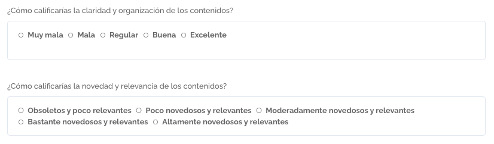

5. Medición del impacto
Encuestas breves dentro del curso: En lugar de formularios largos al final, añadí preguntas rápidas después de cada módulo para recoger feedback en tiempo real y ajustar el contenido según las necesidades de los docentes.
Seguimiento de incidencias: Además, continué registrando las incidencias técnicas. Al final del año escolar el porcentaje de incidencias se redujo a un 11%.